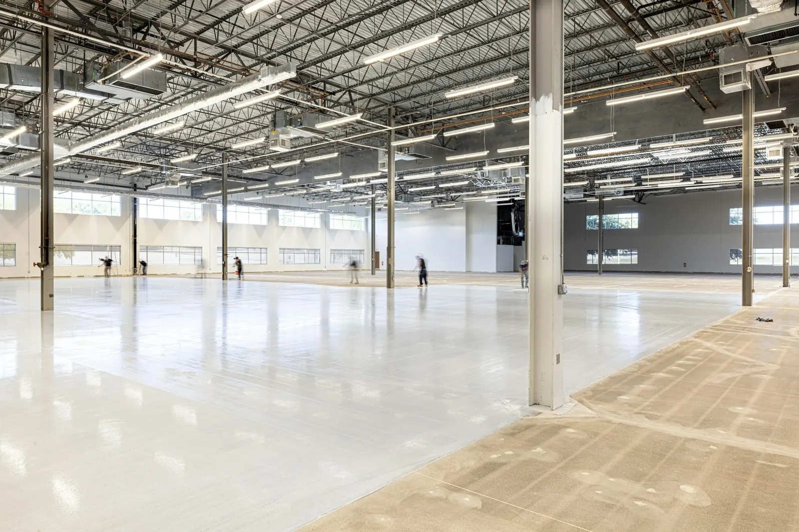
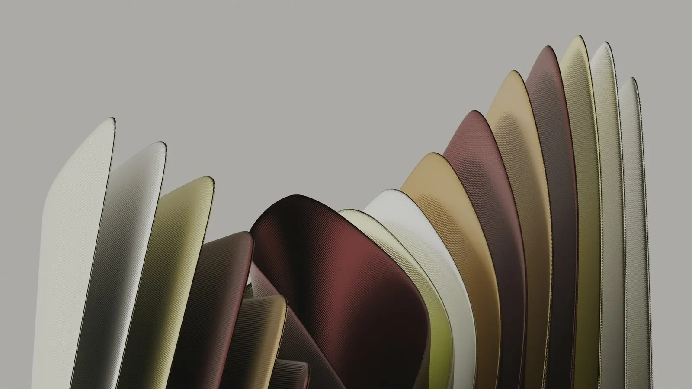
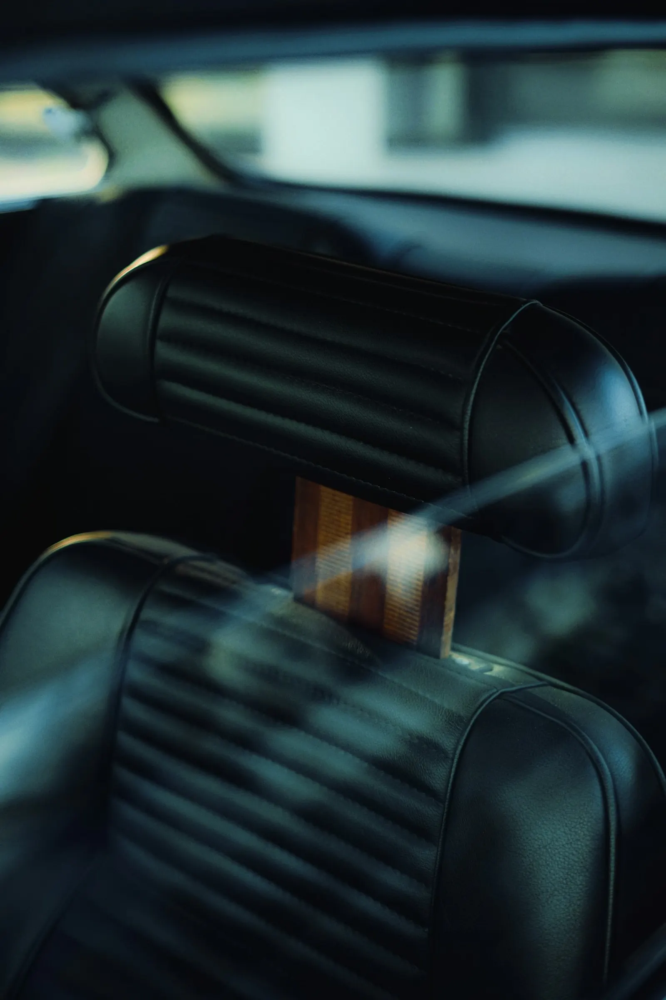
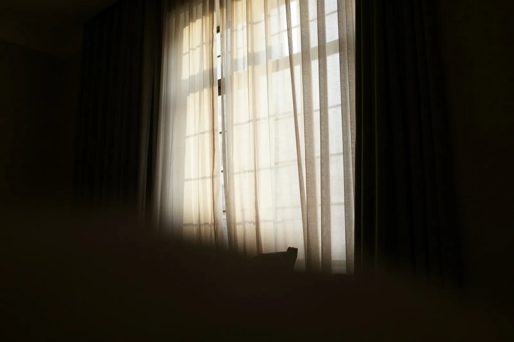

Leistungsbeispiele nach Fachbereich
Die folgenden Kategorien spiegeln belegte Referenzfelder des Betriebs wider. Sie dienen als Orientierung zur Leistungsbreite; konkrete Kundenprojekte mit Vorher-/Nachher-Fotos werden nach Freigabe durch den Auftraggeber ergänzt.

Parkett- und Wasserschadensanierung
Sanierung von Parkettböden nach Wasserschaden, inklusive Entfernung alter Kleberreste und farbiger Ölsystem-Behandlung.

Estrich- und Industriebodensanierung
Großflächige Sanierung von Industrie- und Gewerbeböden, teils bei laufendem Betrieb.
PVC-, Designbeläge & Epoxidbeschichtungen
Verlegung robuster Belagslösungen für Gewerbeflächen mit hoher Beanspruchung.

Restaurierung von Designermöbeln
Aufarbeitung und Neubezug erhaltenswerter Möbelstücke unter Erhalt des Originalgestells.

Fahrzeug- und Sattlerarbeiten
Individuelle Sattlerlösungen für klassische Fahrzeuge und Sonderanfertigungen.

Individuelle Raumkonzepte
Gardinen, Sicht- und Sonnenschutz sowie Wandgestaltung nach individueller Beratung.
Ihr Projekt könnte hier stehen
Sprechen Sie mit uns über Ihr Vorhaben – vom kleinen Möbelstück bis zum großflächigen Gewerbeboden.
Projekt besprechen